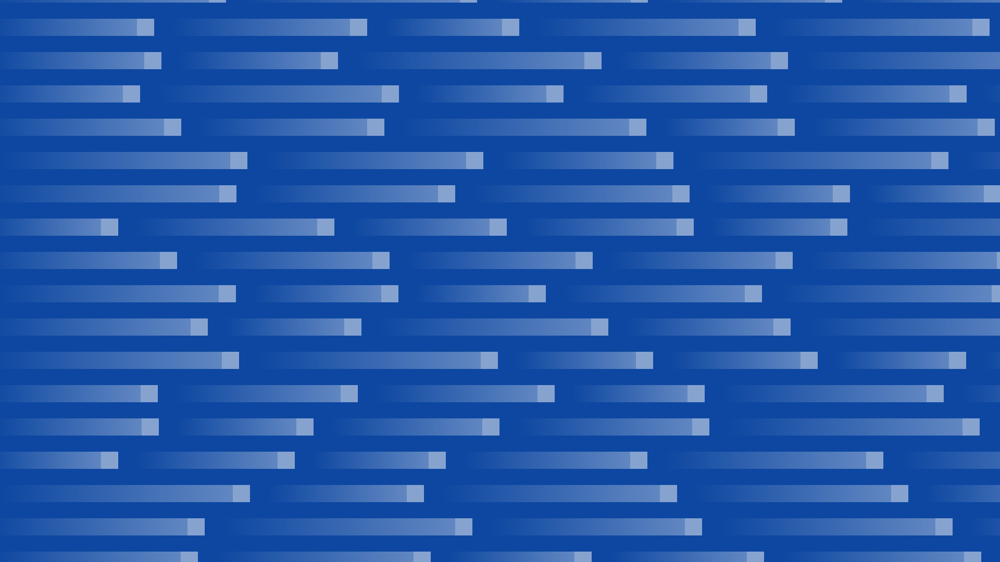
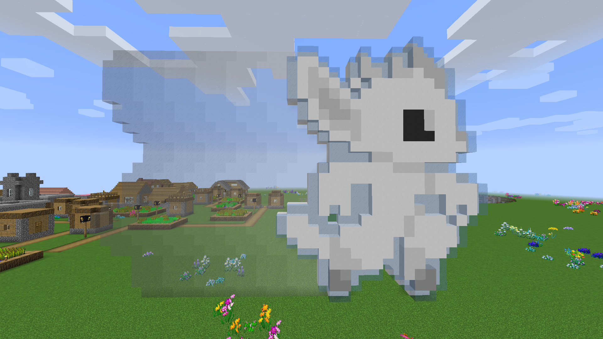
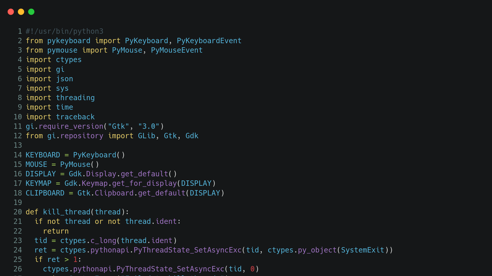

我是 Su226
一个普通的高中生，普通到平庸。

我的爱好有
像是打游戏、听电音、写代码以及偶尔看看番什么的，
但没什么擅长的就是了。

Cell to Singularity - Evolution Never Ends
全成就
Crazy Machines 3
全成就
Nine Parchments
通关
Ori and the Blind Forest
全成就
Ori and the Blind Forest Definitive Edition
全成就
Ori and the Will of the Wisps
全成就
Portal
全成就
Portal 2
伪·全成就
Portal Stories: Mel
全成就
Rexaura
全成就
Q.U.B.E.
想玩
Q.U.B.E: Director's Cut
通关
Q.U.B.E. 2
通关
Spiritfarer
通关
There is no game
全成就
Trine
全成就
Trine 2
全成就
Trine 3
全成就
Trine 4
全成就
其实我不会玩游戏
像空洞蔚蓝等硬核游戏我是不会的。
这里只展示一部分，完整的可以去Steam看，
也欢迎各位大佬加我的Steam好友。

还有我的垃圾项目
部分放在了GitHub上，也包括这个垃圾博客。